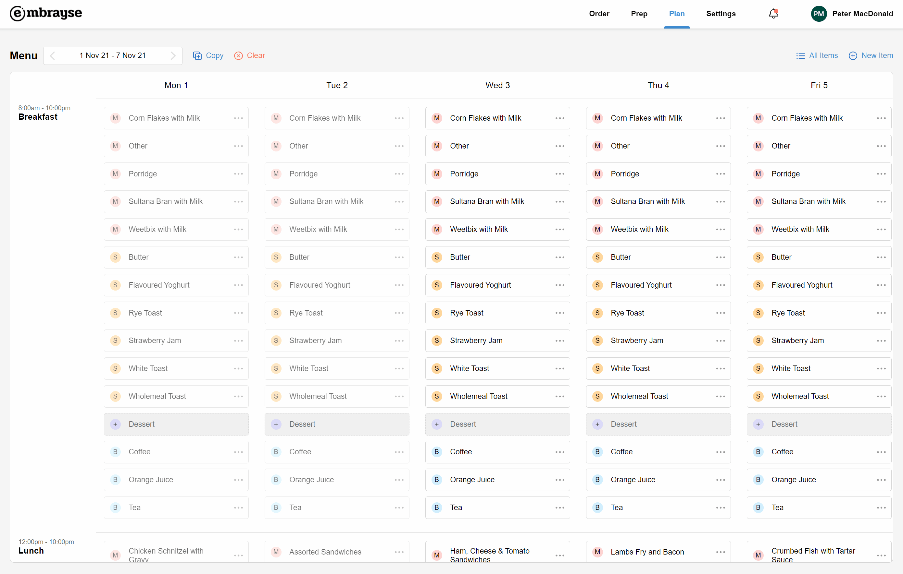
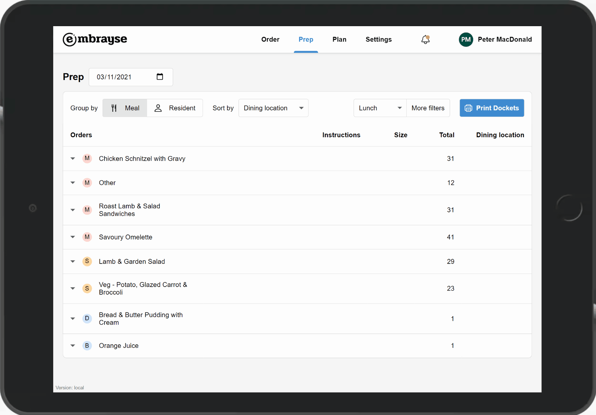
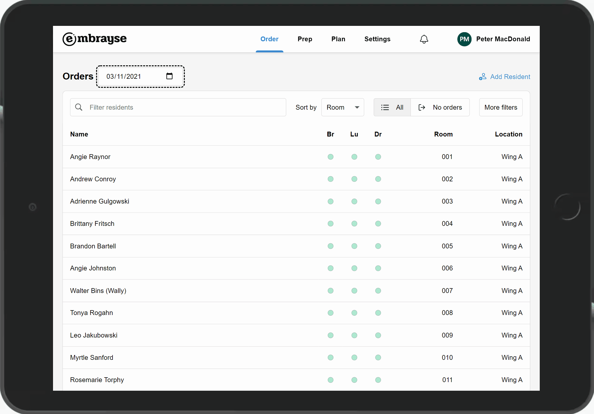

Release 2021.8 – Copy and clear menus, prep report enhancements
This release makes menu planning faster with copy and clear tools, brings powerful new filters and grouping to the prep report, and improves the resident list for order taking.
Menu copy and clear
You can now save a lot of time and avoid mistakes by using the menu copying feature. Simply navigate to the week you want to copy, click the Copy button and select the services and weeks you want to copy to. This is especially useful if you are on, for example, a 4-weekly repeating menu. You can also just choose to copy the breakfast service, if that remains unchanged week to week. Use the Clear button to clear the entire menu, if you just want to start planning from scratch.
When using the Copy or Clear feature, any existing menus in the target week(s) will be overwritten or cleared, and any orders that were placed against them in the future will be removed. This action cannot be undone so use with care.

Prep report improvements
It's now easier and faster than ever to get just the information you need when making preparations in the kitchen:
- Tapping on the resident's name displays their full details, so you can view all their dietary needs.
- You can group the orders by resident instead of meal. This allows you to see everything that each individual has ordered. You can also print a docket for a single resident.
- You can sort the prep report either by dining location, or by resident names.
- The report can be filtered by meal. This is useful, for example, when you want to concentrate on sandwiches or salads, and print just those dockets to leave with the plate.

Resident list improvements
We have also provided additional filtering and sorting options to the resident list to help with order taking:
- If you are taking orders for future dates, you can change the date at the top of the screen and see the order status indicators for that date.
- You can sort the resident list either by room number, or by name.
- You can filter the list by area / wing. This makes it easier to focus on just one area of the facility.

Other Improvements and Bug Fixes
- Removed the following Diet options: High energy, High protein, Low fat, Low sugar, Low sodium, Low potassium. The diet field is for hard restrictions. Going forward, use the tag feature for managing high level dietary goals like High protein.
- The prep report now shows the full room number of the order instead of just "In Room".
- The date selector on the ordering page now shows the day of the week in addition to the date.
- When changing a resident's room number, the user is now warned if that room is already occupied by another resident.
- When using the room switcher on the ordering page, if the room is vacant, this is clearly shown to the user.
- In addition to the room number, the wing name is now displayed on both resident profile and order dockets.
- Fixed: After changing a resident's room, taking orders sometimes causes an error.
- Fixed: Filtering the prep report by tag doesn't work if the tag contains an ampersand (&) character.
- Fixed: Updating a meal that has regular order items associated with it causes an error.
- Fixed: Tags sometimes don't print on the docket.
Want to see Embrayse in action?